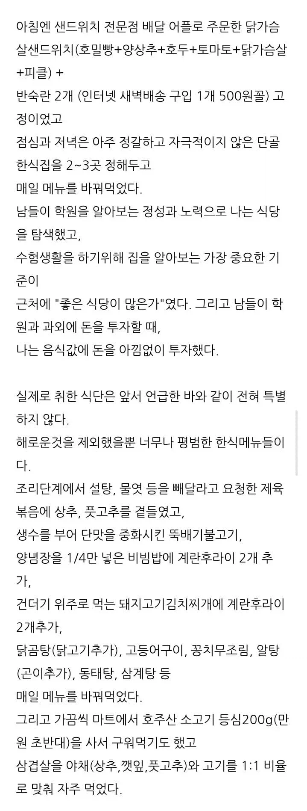

그러게 걍 한식 맛집탐방 유튜버나 하지
어? 흰나무랑 비슷하게 생긴거같음
그냥 잘쳐먹은 청년
ㅋ
저 중에 팩트는 단 1도 없을걸?
공부하기 싫은 애들이 듣고싶은 얘기 해준거지
저래서 공부 잘하면 어이구
제육볶음에 설탕과 물엿을 빼달라고 요청한 뒤 먹었다 << 이게 가능하냐? 보통 제육은 양념에 재워뒀다가 굽잖아
???: gpt야, 식당에서 수험생활에 도움 되는 메뉴 선택 방법에 대해 알려줘
안재워도 괜찮아 근데 보통 양념장에 설탕 다 들어감 ㅋㅋㅋㅋ
야무지게도 먹었네
왜 단맛에 염병을 하는겨. 지들 선배들 단거 잘 쳐먹고 업적들 이뤘는데....
공부법 팔이를 해야되는데 진짜 공부는 아는게없으니 몸관리,멘탈관리 이런쪽으로 포커싱 맞춰야돼서 그럼ㅋㅋㅋ 음식은 이렇게먹어라, 전력질주를 하루에 10번씩해라, 핸드폰보지마라 이런거
요즘 많이 언급되는 혈당스파이크겠지 뭐..
ㄹㅇㅋㅋ 내 공부경험으론 오히려 빡공할땐 당분 쉴새없이 넣어줘야하던데
집중 ㅈㄴ 하면 당 딸리는게 바로 느껴짐
괜히 포도당캔디 나온게 아님
저렇게 안먹었을 거임
그냥 공부적으로 할 말 없으니까 관리부분만 나열
와근데 쳐뒤진거 살짝 안쓰러워질라하다가도 이런거보면 뻔뻔한 사기꾼년 잘뒤졌다싶네 ㅋㅋㅋ
얘는 진짜 옹호의 여지가 없음 얼마나 많은 수험생이 저 책 사서 저거 따라했겠어 천하의 나쁜 놈임
저 책에서 자기가 비결이라고 내놓은 거 지는 실제로 얼마나 했겠냐 디지털 디톡스도 그렇고 식단도 그렇고
라고 ai가 추천해줌
어 나도 아침 반숙란 먹는데 ㅋㅋㅋ 밥 먹기엔 귀찮고 배도 별로 안고픈데 그렇다고 안 먹으면 오전에 힘들어져서 이것저것 먹어봤는데 제일 좋은 게 반숙란이더라. 맛있고 소화 잘되고 영양가높고 쓸데없이 당 높지도 않고
난 그것도 귀찮아서 구운란으로 대체
지가 빽이야?
곤이추가는 인정
아는 공부법이 없으니까 병신같은 근성론만 설파하네
그래서 마지막까지 순두부를
단골 한식집에 순두부집 무조건 있었겠지? ㅋㅋ
그냥 잘 쳐먹는 청년 ㅋㅋㅋㅋㅋㅋ
설탕 끊자 31살에 사망
그 자본주의는 차갑다 걔처럼 적당히 해먹다가 유튜버로 반짝 땡겨먹기나하지
도파민 디톡스고 나발이고 그런 생각조차 안든다. 그냥 기계처럼 공부 해야할뿐
그걸 1년동안 계속 하면 웬만한 시험은 합격함.
솔직히 럭키 성공팔이임
자세히도 적어놨네 뭔 레시피인줄
저것도 보여주기 식으로 AI 돌렸겠지 뭔
조리전에 조미료 감가요청을 들어준다고?
공부법으로는 설명할 수 없으니 특이한게 뭘까 하다가 찾은 게 저거일듯
곤이추가까지했네. 맛잘알;;;
맛집 유튜브나 하지